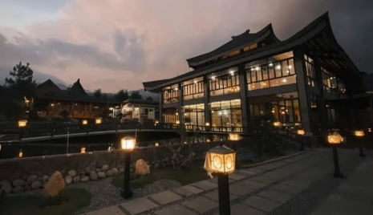

Rekomendasi Tempat Kuliner
Arunika Eatery
Arunika Eatery adalah destinasi wisata kuliner yang terletak di kawasan pegunungan Kabupaten Kuningan, Jawa Barat. Dibuka pada Agustus 2022, tempat ini dengan cepat populer berkat suasana ala Jepang yang kental dan pemandangan spektakuler ke Gunung Ciremai.
Arunika Eatery mengusung desain arsitektur tradisional Jepang dengan elemen modern. Pengunjung disambut oleh bangunan joglo besar, jembatan kaca, serta interior yang dihiasi lampu lampion kertas dan seni ukiyo-e. Area makan terbagi menjadi indoor, outdoor, dan lesehan, menawarkan kenyamanan dan keindahan alam sekitar.
📠Alamat: Jl. Cigugur-Palutungan, Desa Cisantana, Kecamatan Cigugur, Kabupaten Kuningan, Jawa Barat 45552
🕒 Jam Operasional: Setiap hari, pukul 10.00 – 21.00 WIB
Jagara Eco Park
Jagara Eco Park adalah destinasi wisata alam dan kuliner terbaru di Kuningan, Jawa Barat, yang menawarkan pemandangan indah Waduk Darma dan Gunung Ciremai.
Dibuka pada akhir 2024, Jagara Eco Park menghadirkan suasana asri dengan alam. Pengunjung dapat menikmati panorama Waduk Darma dan Gunung Ciremai dari berbagai spot foto yang Instagramable. Tempat ini cocok untuk healing, bersantai, atau sekadar menikmati senja yang menawan.
📠Alamat: Jl. Sakerta Timur, Desa Jagara, Kecamatan Darma, Kabupaten Kuningan, Jawa Barat 45562
🕒 Jam Operasional: Setiap hari, pukul 10.00 – 21.00 WIB
Tiket Masuk: Saat ini, pengunjung hanya dikenakan biaya parkir kendaraan.
Saung Karuhun
Saung Karuhun adalah destinasi wisata kuliner yang terletak di Desa Sakerta Timur Kecamatan Darma Kabupaten Kuningan, Jawa Barat. Tempat ini menawarkan pengalaman bersantap dengan suasana pedesaan yang asri, dikelilingi oleh hamparan sawah dan pemandangan Gunung Ciremai yang menakjubkan. Saung Karuhun mengusung konsep arsitektur tradisional Sunda dengan sentuhan budaya Bali. Bangunan-bangunan di sini didominasi oleh bahan alami seperti bambu dan kayu, serta atap dari daun kelapa kering (injuk).
📠Alamat: Jl. Sakerta Timur, Desa Sakerta Timur, Kecamatan Darma, Kabupaten Kuningan, Jawa Barat 45562, Indonesia
🕒 Jam Operasional: Setiap hari, pukul 09.00 – 20.00 WIB